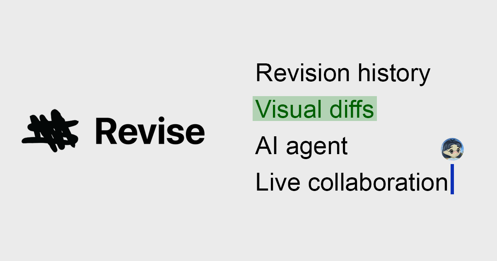
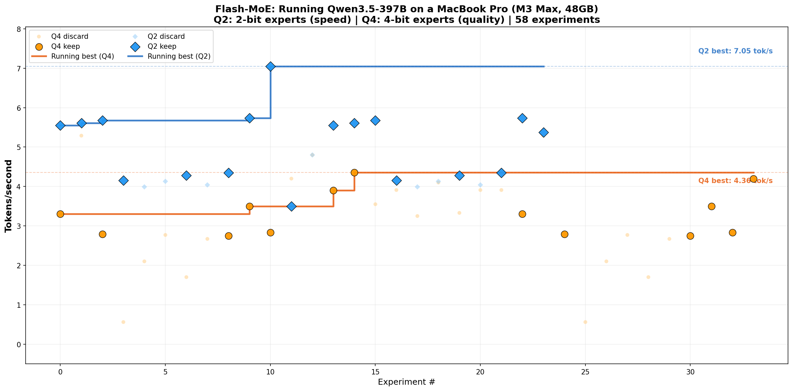

THE FRONT PAGE
EDITOR'S NOTE: As the architects of our foundational systems trade their legacies for convenience or fallout, we are left to wonder if the next generation will even recognize the tools they are being taught to abandon. #Institutional decay and the outsourcing of systemic oversight to proprietary black boxes.
The U.S. Department of State issued another blanket advisory urging 'increased caution' worldwide, a move that risks normalizing vague warnings while offering little actionable guidance for travelers or businesses. The seal of bureaucracy, it seems, now doubles as a shield against accountability.
Large language models are transforming stylometry from a niche forensic craft into an automated utility, making it trivial to link disparate prose to a single identity. While this provides a check on coordinated disinformation, it effectively mandates a future where true anonymity requires a mechanical, and likely AI-assisted, erasure of one's own linguistic fingerprints.
A new analysis dissects transformer architectures into interpretable 'circuits,' trading black-box convenience for the kind of mechanical transparency engineers once took for granted. The work arrives as the field grapples with whether such reverse-engineering can outpace the models' own accelerating complexity.
Engineering teams are increasingly swapping standard self-attention for sparser variants to keep context windows from collapsing under their own quadratic weight. This optimization gains efficiency but risks losing the nuanced long-range dependencies that defined the original Transformer architecture.
A new system freezes water with excess solar during the day, then melts it at night to drive air conditioning, sidestepping lithium batteries entirely. The tradeoff? It only works in climates where nighttime temps stay above freezing, and the ice storage tanks require 3x the footprint of chemical batteries for equivalent cooling output.

A new document editor called *Revise* promises to redline prose with the pedantic vigor of a first-year law associate, raising the question of whether mechanical precision in editing now outstrips the judgment of its human counterparts. The tool’s real test will be whether it can resist the urge to ‘improve’ idiosyncratic voice into corporate gruel.
NixOS offers a rigorous path toward reproducible infrastructure, yet the steep learning curve forces a tradeoff between system integrity and the immediate developer velocity typically demanded by modern product cycles.

Researchers demo *Flash-MoE*, a sparse activation technique that crams a 397B-parameter mixture-of-experts model into consumer hardware—trading off precision for the novelty of local inference. The trick? Aggressive quantization and a 1-bit optimizer, because apparently 'good enough' is the new frontier.
MODEL RELEASE HISTORY
No confirmed model releases were detected for this edition date.